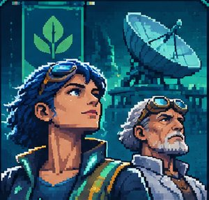
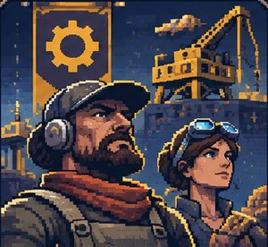

Fly & explore
Click empty space to fly or hold and drag to steer. Click a target to lock and scan it. Open the galaxy map with M, plot a route and press G to jump when fuel and range allow.
Find your own path in a galaxy divided by four powers. Explore star systems, trade goods, mine asteroids and take contracts — or turn to smuggling and piracy. Develop your pilot, customise your ship and build a fleet and stations of your own.
Start as a lone pilot. Choose your opportunities, your allies and how far your ambitions will take you.
Click empty space to fly or hold and drag to steer. Click a target to lock and scan it. Open the galaxy map with M, plot a route and press G to jump when fuel and range allow.
Mine asteroids, collect cargo and sell where demand is high. Take jobs, hunt pirates or risk stolen cargo and black-market deals. Your actions change your standing with the powers.
Survey systems and planets with the scanner, recover exploration data and sell your findings. Gain pilot levels and talents, upgrade your ship and unlock research.
Hire miners and escorts, found stations or take control of existing ones. Develop your systems and defend them against raids. Remain independent or pledge to a power and inherit its rivalries.
Once, trade lanes bound the stars together. Now they are divided by old grievances, shifting borders and wars that never truly ended. Convoys vanish along forgotten routes. Distant colonies look for protection. Beyond the reach of the great fleets, pirates wait.
The Terran Concord guards its borders by force. The Solar Dominion controls the markets and buys worlds. The Free Accord refuses imperial rule, while the Independent Systems survive between them.

Order through strength
Born from the ashes of interstellar wars, the Concord unites human colonies under one government. Its fleets defend trade lanes and enforce galactic law. To its admirals, peace is something that must be protected by force.

Wealth becomes power
An empire built by merchant houses and industrial dynasties. The Dominion controls the markets and buys worlds, spreading its influence through wealth and trade. Its ambitions bring it into conflict with the Concord and the free colonies.

Freedom to discover
Scientists, explorers and settlers who refused the rule of empires. The Accord values independence, research and the right to choose your own future. Its advanced ships chart the unknown while its colonies resist the Dominion's expansion.

No throne. No master.
Mining colonies, frontier settlements and smugglers' havens bound by their refusal to bow to the great powers. They have no single ruler or united fleet. Here, traders, outcasts and fortune hunters struggle to keep their freedom — and their routes — alive.
You are one pilot in a galaxy that remembers. Serve a power, make your fortune, or build something of your own.
Whose side will you fly for?
Choose your pathMouse controls and keyboard shortcuts for the current browser build.
Start a new game and discover the world at your own pace.